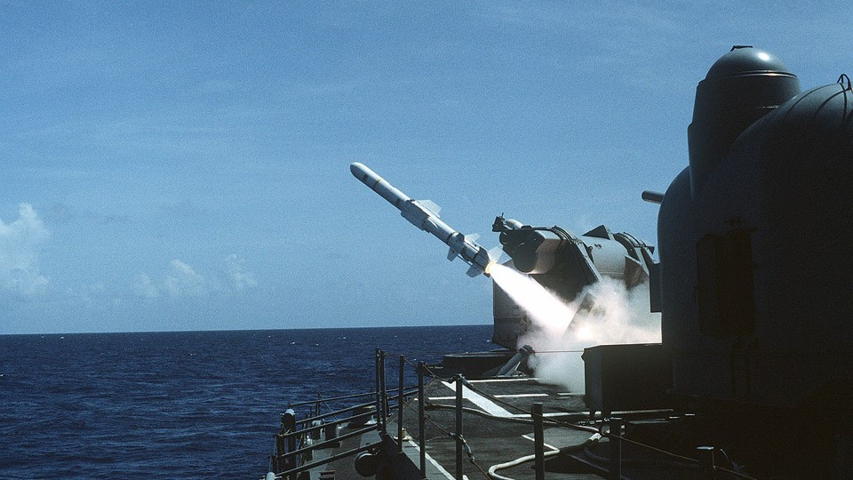
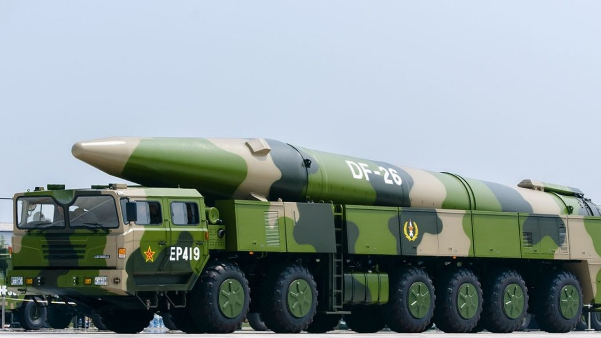
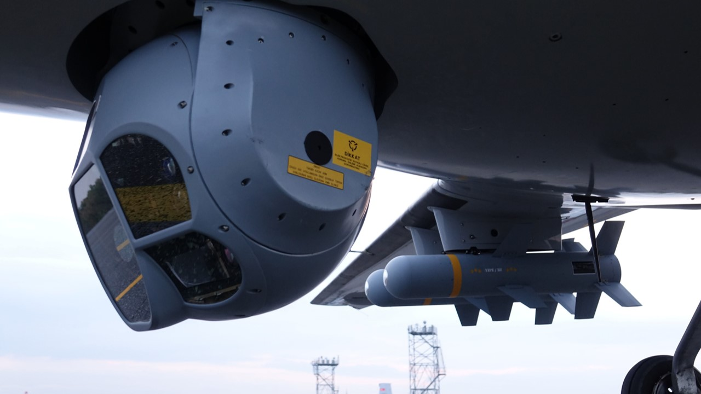
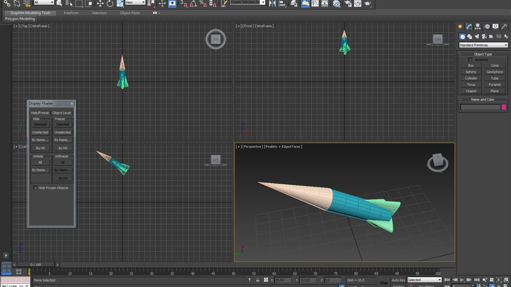
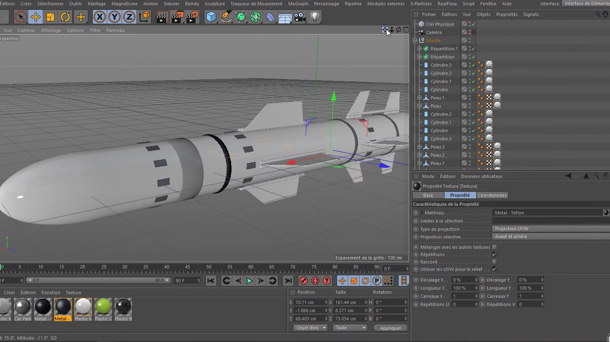
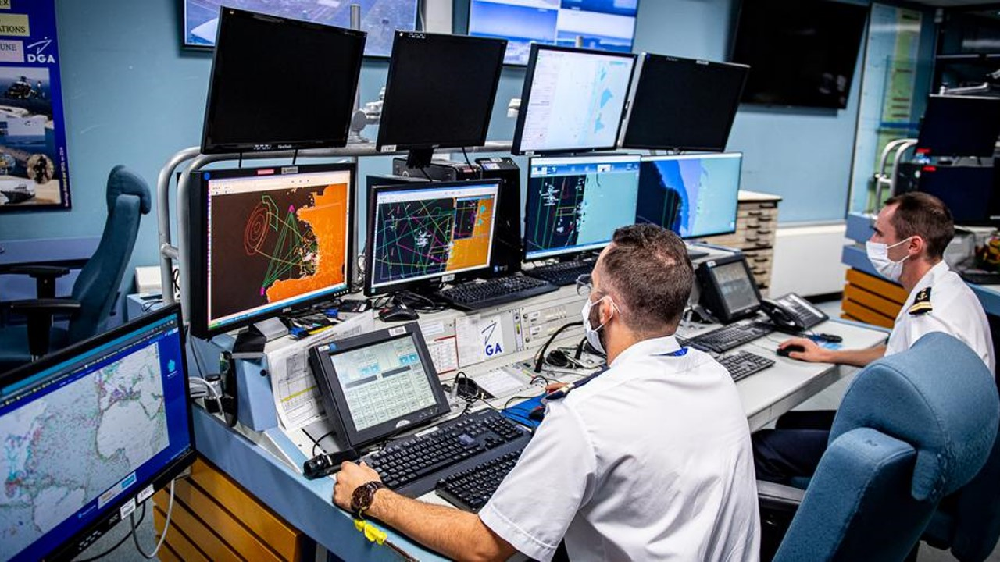

Les missiles
Présentation des missiles
Un missile est un projectile guidé capable de parcourir une distance considérable à une vitesse élevée en suivant une trajectoire déterminée. Les missiles peuvent être utilisés pour une variété de missions, allant de la défense aérienne à la frappe de cibles terrestres ou navales.
Il existe plusieurs types de missiles, chacun ayant ses propres caractéristiques et applications :
- Les missiles air-air sont conçus pour intercepter d'autres avions en vol.
- Les missiles air-sol sont utilisés pour attaquer des cibles terrestres, comme des bâtiments ou des véhicules, depuis les airs.
- Les missiles sol-air sont utilisés pour attaquer des cibles aériennes, telles que des aéronefs ou des drones, depuis le sol.
- Les missiles anti-navires sont conçus pour couler des navires ennemis.
- Les missiles anti-char sont utilisés pour détruire des véhicules blindés.
- Les missiles de croisière sont des missiles à longue portée qui peuvent parcourir des milliers de kilomètres et sont utilisés pour des missions de frappe à longue distance.
- Les missiles balistiques sont des missiles à longue portée qui sont utilisés pour des missions de frappe à grande distance, tels que les missiles intercontinentaux.
Les missiles peuvent être nucléaires ou à têtes explosives dans la plupart des cas, mais peuvent aussi être simplement armés de lames, dans des cas plus rares comme le missile "Ninja" de l'armée américaine. C'est ce missile qu'a utilisé les forces américaines pour tuer le chef d'al-Qaïda le 30 jeuillet 2022.
Les missiles sont propulsés par divers types de moteurs, tels que les moteurs à réaction ou les moteurs-fusées. Certains missiles peuvent également être équipés de têtes explosives ou de charges utiles, comme des missiles à fragmentation ou des missiles à ogive nucléaire.
Les missiles peuvent être guidés par différents systèmes, tels que des systèmes de guidage infrarouge, radar, laser, GPS ou satellite. Les missiles guidés peuvent être autonomes, semi-autonomes ou télécommandés.
En résumé, les missiles sont des armes puissantes et polyvalentes, utilisées dans de nombreuses situations militaires et de défense.iées pour garantir une utilisation responsable et éthique de ces technologies.

Lancer d'un missile anti-navire

Missile balistique DF-26
L'informatisation des missiles
L'informatisation des missiles est un développement important dans la conception et la fabrication de missiles modernes. Les missiles sont équipés de systèmes informatiques qui contrôlent la propulsion, le guidage et la navigation. Les missiles modernes peuvent également être programmés avec des paramètres de mission spécifiques et des objectifs de cible.
Les missiles informatisés peuvent utiliser des systèmes de guidage plus précis et sophistiqués, tels que des capteurs infrarouges, des radars, des GPS, des systèmes laser et des caméras. Ces systèmes permettent aux missiles de suivre des cibles avec une grande précision, même dans des environnements difficiles.
L'utilisation de logiciels de pointe permet également aux missiles de traiter des données en temps réel, de prendre des décisions et de s'adapter à des situations changeantes. Les missiles peuvent également communiquer avec d'autres systèmes de défense, tels que les avions de chasse, les systèmes de défense aérienne et les systèmes de surveillance.
L'informatisation des missiles permet également une meilleure sécurité et une plus grande fiabilité. Les systèmes informatiques peuvent surveiller l'état du missile, détecter les problèmes et prendre des mesures pour corriger les problèmes. Cela réduit le risque de défaillance du missile ou d'erreur de guidage.
En résumé, l'informatisation des missiles a révolutionné la façon dont les missiles sont conçus, fabriqués et utilisés dans les opérations militaires et de défense. Les missiles informatisés sont plus précis, plus efficaces et plus fiables que les missiles plus anciens et moins sophistiqués.

Système de guidage pour missiles

Logiciel de simulation pour missiles

Modélisation de missiles

Centre d'essai de missile à Biscarosse